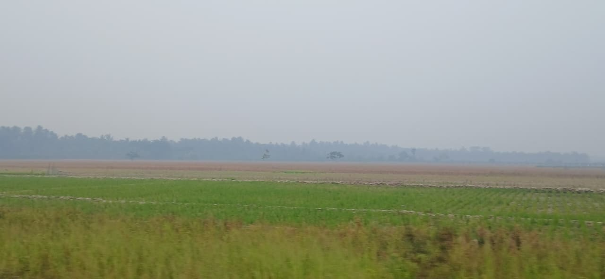

SELAMAT DATANG DI
Menjelajahi keindahan alam, suasana pedesaan, dan berbagai pemandangan sederhana yang ada di Desa Seburing Hilir.
DESA SEBURING HILIR
Desa Seburing Hilir berada di Kecamatan Semparuk, Kabupaten Sambas, Kalimantan Barat.
Keindahan desa dapat ditemukan dari berbagai hal sederhana di sekitar kita, seperti hamparan sawah, tumbuhan hijau, suasana lingkungan desa, cahaya sore, dan pemandangan senja.
Jelajahi Keindahan →
YANG BISA DITEMUKAN
Nikmati berbagai keindahan sederhana yang ada di lingkungan desa.
Pemandangan sawah yang memberikan suasana khas pedesaan.
Beragam tumbuhan yang menghiasi lingkungan sekitar desa.
Keindahan langit sore yang memberikan suasana tenang dan nyaman.
"Keindahan tidak selalu tentang tempat yang mewah, terkadang keindahan hadir dari kesederhanaan di sekitar kita."
— Desa Seburing Hilir 🌿